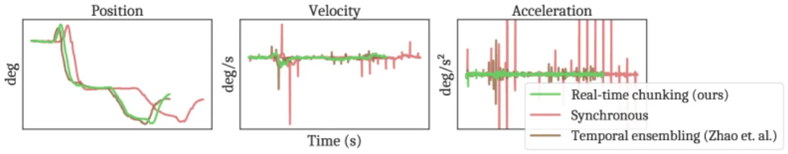
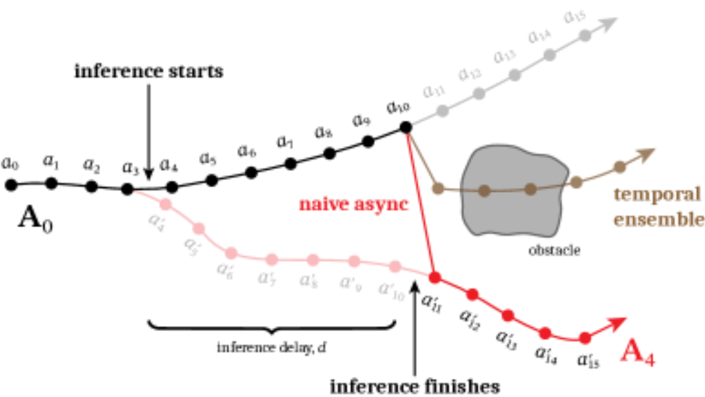
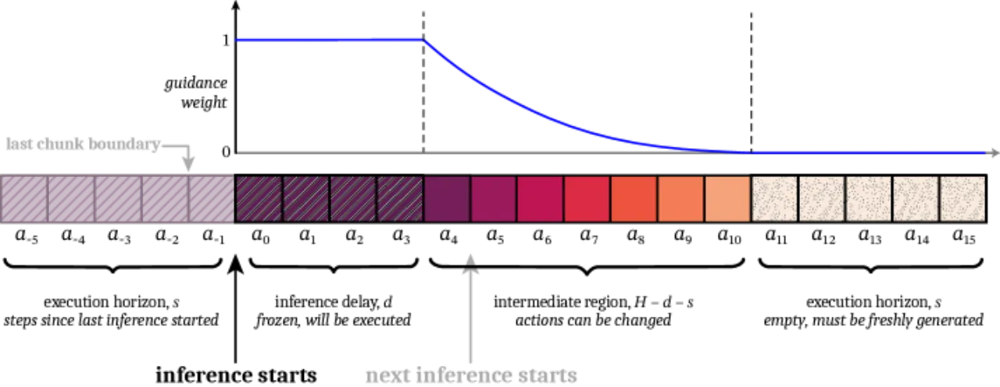
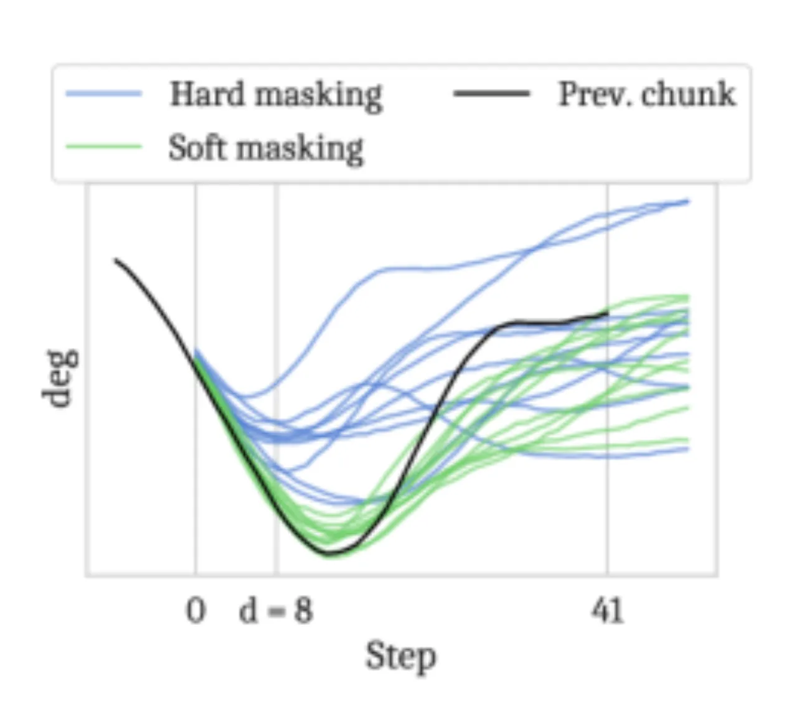
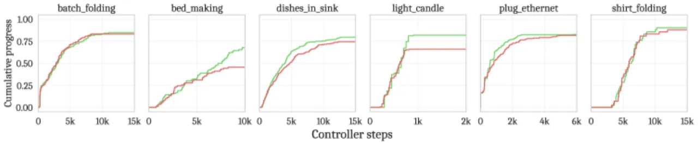

本文提出 Real-Time Chunking (RTC)，一种纯推断时算法， 让基于 diffusion / flow matching 的视觉-语言-动作模型（VLA）能够在执行当前 action chunk 的同时生成下一个 chunk， 彻底消除块边界处的停顿与跳变。无需重训练，适用于任意 diffusion- 或 flow-based 策略。
大规模 VLA 的高推断延迟与 action chunking 的固有缺陷共同造成了实时控制的瓶颈： 策略推断期间机器人要么完全暂停（synchronous），要么在 chunk 边界处出现模式跳变（naive async）， 两者都会导致明显的卡顿或抖动，对动态任务尤其有害。
"While action chunking has enabled temporal consistency in high-frequency control tasks, it does not fully address the latency problem, leading to pauses or out-of-distribution jerky movements at chunk boundaries."

Action chunking 策略在推断时会输出一段连续的动作序列（chunk，长度 H），并执行其中前 s ≤ H 步。 问题在于：下一次推断必须等当前 chunk 执行完才能开始（synchronous），或者新旧 chunk 之间存在模式不连续（naive async）。 如图所示，temporal ensembling 等朴素平均方案在多模态分布下甚至可能产生比原始 chunk 更差的动作序列（如图 2 中的"bifurcation"现象）。

RTC 将异步 action chunking 重新表述为一个 inpainting 问题： "冻结"（freeze）那些在下一次推断完成前必然已执行的动作（prefix）， 并对其余部分进行"修复"（inpaint suffix），从而生成与当前执行序列在物理上连续的下一个 chunk。 整个流程在推断时运行，无需任何重训练。

Flow matching（以及 diffusion）天然支持 inpainting：在去噪迭代中， 将已知的 prefix 动作（带噪版本）直接注入对应位置，引导模型生成与之一致的 suffix。 目标是让新 chunk 的其余部分在条件上与这段"frozen prefix"保持一致， 就像图像修复中补全被遮挡的区域一样。
朴素 inpainting（hard masking）直接将 prefix 位置替换为带噪的已知动作， 忽略了 prefix 与 suffix 之间的平滑过渡需求，容易在边界处产生更快的方向变化。 RTC 引入 soft masking：对 prefix 内的动作以一个随 timestep 增长的权重 逐渐混入噪声，使模型在 denoising 时得到更自然的梯度信号，生成更平滑的过渡。 论文给出的引导权重裁剪值 β 用于防止在某些参数区间出现数值不稳定（详见 A.2 消融实验）。

完整系统将上述两个组件结合：在执行第 k 个 chunk 的同时， 以其前 d 步作为 frozen prefix 启动第 k+1 个 chunk 的推断（soft-masked inpainting）。 推断完成后立即无缝切换，机器人从不暂停。 RTC 的唯一额外开销是需要在每个 denoising step 中对 prefix 做反向传播以计算引导梯度， 导致单次推断延迟略高于 baseline（π0.5 上：76 ms → 97 ms，RTX 4090，bfloat16，n=5 denoising steps）。
实验分两部分：（1）基于 Kinetix 仿真器构建的 12 个高度动态任务的新 benchmark， 在可控推断延迟下系统对比各方法；（2）在真实 π0.5 VLA 上的 6 项双臂操作任务， 共 480 次实验，28 小时机器人执行时间。
数据集：每个环境用 RPO 训练 6 个专家策略，生成 1M 转移数据集； 训练具有预测 horizon H=8、4 层 MLP-Mixer 架构的 action chunking flow 策略。 评测指标：binary success rate，每个数据点 2048 次 rollout，95% Wilson score 置信区间。 仿真推断延迟 d 从 0（完全闭环）到 4（H=8 时支持的最大值）。
对比方法：
结果（Figure 5 右侧延迟曲线）：
TE 在所有延迟下表现均差，即便 d=0 亦然——反映了 benchmark 的多模态性（多个有效动作的平均未必是有效动作）。
RTC 对推断延迟最为鲁棒，全面超越 BID；随延迟增大，RTC 的优势进一步扩大。
BID 使用的计算量远超 RTC（采样 64 个 action chunk，32 来自强模型，32 来自弱模型）。
执行 horizon 曲线（Figure 5 左侧）显示：只有 RTC 和 BID 能充分利用更短执行周期带来的闭环增益，
随执行 horizon 减小而单调提升，而 soft masking 在较小 d 下进一步提升了性能。
使用 π0.5（H=50，Δt=20 ms，n=5 denoising steps）在双臂系统（两个 6-DoF 臂 + 并联夹爪）上评测。 基准推断延迟约 d≈6（LAN 推断含 10–20 ms 网络延迟）； 额外注入 +100 ms 和 +200 ms 延迟，分别对应 d≈11 和 d≈16，模拟更大模型或远程云推断场景。
| 任务 | 说明 | Synchronous | TE (dense) | RTC |
|---|---|---|---|---|
| Light candle | 点火（5 子步，40s 限时，无重试） | 最低成功率 | +100/+200ms 触发 protective stop | 最高最终得分，显著优势 |
| Plug ethernet | 插以太网线（6 子步，120s） | 线性降级 | +100/+200ms 不可运行 | 完全不受延迟影响 |
| Make bed (mobile) | 移动床上毯子和枕头（3 子步，200s） | 最难任务，易失败 | +100/+200ms 不可运行 | 更早完成更多子步 |
| Shirt folding | 衬衫折叠（1 步，300s） | 基线 | +100/+200ms 不可运行 | 更快达成 |
| Batch folding | 取衣物 → 展平 → 折叠 → 堆放（4 步，300s） | 基线 | +100/+200ms 不可运行 | 吞吐量最佳 |
| Dishes in sink (mobile) | 移动 4 件餐具进水槽（8 步，300s） | 基线 | +100/+200ms 不可运行 | 任务吞吐最佳 |
综合指标为 average throughput（任务完成比例/总时长的均值）。 RTC 在所有推断延迟下均达到最佳 throughput，且在 +100 ms 和 +200 ms 条件下差异具有统计显著性。 RTC 对注入延迟完全鲁棒，无性能下降；synchronous 随延迟线性退化； 两种 TE 变体在 +100 ms / +200 ms 注入延迟下因震荡过大触发机器人 protective stop，完全无法运行。

在 GPU 神经网络推断部分（不含网络传输），RTC 因在每个 denoising step 中需反向传播， 推断时间从 baseline 的 96.89 ± 0.16 ms 升至 97.43 ± 0.28 ms（non-mobile 模式）。 BID（无 forward contrast）延迟显著高于 RTC；full BID 需要两份完整模型拷贝，代价最高。
仿真消融（Figure 5 右）证实：soft masking 在较低推断延迟和较短执行 horizon 下优于 hard masking， 支持了方法设计的理论动机。A.4 中的额外消融进一步验证了 β 裁剪对稳定性的必要性。
RTC 需要在每个 denoising step 中对 frozen prefix 做反向传播以计算引导梯度， "it adds significant computational overhead compared to methods that sample directly from the base policy." 尽管绝对延迟增幅较小（约 0.5 ms），但对资源受限的边缘设备或更大模型而言仍是挑战。
"it is applicable only to diffusion- and flow-based policies." 基于自回归解码（如 OpenVLA）或向量量化（如 RT-2、ARP）的策略无法直接使用 RTC 的 inpainting 机制。
"while our real-world experiments cover a variety of challenging manipulation tasks, there are more dynamic settings that could benefit even more from real-time execution. One example is legged locomotion, which is represented in our simulated benchmark but not our real-world results." 当前真实世界评测局限于双臂操作，对步行机器人等需要更高频率闭环控制的平台尚未验证。